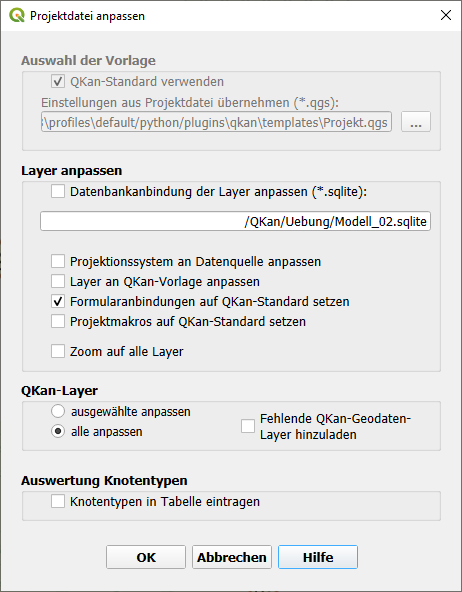

Allgemein
Optionen
Das Tool  Optionen dient zur zentralen Verwaltung und Anpassung der globalen Einstellungen von QKan.
Hier können grundlegende Parameter zur Projektion, Dateiverwaltung, Darstellung und automatischen Datenübernahme festgelegt werden.
Die Einstellungen wirken sich auf das geöffnete QKan-Projekt aus.
Optionen dient zur zentralen Verwaltung und Anpassung der globalen Einstellungen von QKan.
Hier können grundlegende Parameter zur Projektion, Dateiverwaltung, Darstellung und automatischen Datenübernahme festgelegt werden.
Die Einstellungen wirken sich auf das geöffnete QKan-Projekt aus.
Im ersten Reiter können die allgemeinen Programmeinstellungen konfiguriert werden:

Projektionssystem der QKan-Datenbank Hier wird das Koordinatensystem festgelegt, das für alle geometrischen Daten (Schächte, Haltungen, Flächen etc.) verwendet wird. Eine korrekte Definition ist insbesondere für den Austausch mit anderen GIS-Systemen (z. B. QGIS oder SWMM) entscheidend, um Lageabweichungen zu vermeiden.
Hauptpfade für Mediendateien In diesem Bereich werden die Standardverzeichnisse für Fotos und Videos aus Kanalbefahrungen angegeben. Diese Pfade dienen QKan als Referenz für die Zuordnung von Mediendateien zu den jeweiligen Kanalelementen. Wenn sich die Ordnerstruktur ändert, kann sie später mit dem Tool „Dateipfad-Suche“ automatisch aktualisiert werden.
LOG-Datei-Verknüpfung Über eine direkte Verlinkung kann die Protokolldatei (LOG-Datei) geöffnet werden. Sie enthält detaillierte Informationen zum Programmablauf, Fehlern und Hintergrundprozessen – hilfreich zur Fehleranalyse oder zur Nachvollziehbarkeit von Berechnungsschritten.
Im zweiten Reiter werden die Standardwerte für die grafische Darstellung und Bearbeitung von QKan-Daten in QGIS festgelegt:

Fangradius und Mindestflächengröße Diese Parameter sind relevant für die automatische Anbindung von Flächen an Haltungen. Ein zu großer Fangradius kann zu fehlerhaften Zuordnungen führen, während ein zu kleiner Wert unter Umständen keine Verbindung erzeugt. Die Mindestflächengröße dient dazu, sehr kleine oder unerwünschte Flächen bei der Flächenauswertung zu ignorieren.
Textpositionen für Zustandsdaten Die Positionierung der Zustandsbeschriftungen (z. B. Schadenscodes, Zustandsklassen) kann individuell angepasst werden. Durch die Änderung der Standardwerte lässt sich eine bessere Lesbarkeit und Übersichtlichkeit der Darstellungen in QGIS erreichen.
Im dritten Reiter Automatische Datenübernahme werden die Trigger verwaltet die bei dem neuanlegen von Haltungen und Schächten genutzt werden können.

QKan-Projekt aktualisieren
Mit der Funktion QKan-Projekt aktualisieren können Projekte, die noch auf einer älteren QKan-Version basieren, auf den aktuellsten Stand gebracht werden. Dabei werden die vorhandenen QKan-Layer in Ihrer Darstellung auf den aktuellen Standart gebracht. Layer die außerhalb von QKan in dem QGIS Projekt enthalten sind, werden nciht verändert.
{kind=link}
Unter der Überschrift „Layer anpassen“ kann die QKan-Datenbank gewählt werden. Des Weiteren kann das Projektionssystem der Layer anhand der Datenbank aktualisiert werden. Weiterhin ist es empfehlenswert, unter der gleichen Punkt auch die Option „Formularanbindungen auf QKan-Standard setzen“ zu aktivieren.
Auswahl der Vorlage
„QKan-Standard verwenden“ sollte aktiviert werden, wenn keine eigenen Standards vorliegen. Sollen Einstellungen aus bereits existierenden Projektdateien übernommen werden, so kann die entsprechende Datei unter „Einstellungen aus Projektdatei übernehmen“ mit der Schaltfläche […] rechts daneben ausgewählt werden.
Layer anpassen
In diesem Bereich kann eine Datenbank ausgewählt werden, an die das Projekt angebunden werden soll. Auch die übrigen Optionen sollten in der Regel aktiviert werden.
QKan-Layer
Unter dieser Überschrift kann ausgewählt werden, welche Layer bearbeitet werden sollen.
Auswertung Knotentypen
Mit diesem Punkt werden in der Tabelle Schächte Informationen zum Knotentyp ergänzt und in dem Layer Knotentyp dargestellt.
Projektdatei auf andere Datenbank übertragen
Oft entstehen nach einiger Zeit komplexe Projektdateien, die besondere Layerdarstellungen enthalten und quasi „Firmenstandards“ darstellen. Solch eine Projektdatei kann mit der Funktion QKan-Projektdatei übertragen folgendermaßen auf ein anderes Projekt übertragen werden:
{kind=link}
QKan-Datenbank
Hier wird die einzubindende QKan-Datenbank gewählt. Um sicherzustellen, dass die Datenbank auf dem aktuellsten Stand ist, kann die Option „QKan Datenbank aktualisieren“ gewählt werden.
Projektdatei als Vorlage
Mit der Schaltfläche … kann die Projektdatei gewählt werden, die mit der vorhandenen Datenbank verknüpft werden soll. Ist keine entsprechende Projektdatei vorhanden, kann auch die QKan-Standardvorlage gewählt werden.
Neue Projektdatei
Über … kann der Pfad der neu zu erstellenden Projektdatei ausgewählt werden.
Datenbank aktualisieren
Mit der Funktion  QKan-Datenbank aktualisieren kann die QKan Datenbank sowie die
Projektdatei auf die aktuelle Version aktualisiert werden. Dabei kann mit der Auswahl unter dem Verzeichnis
eine Sicherheitskopie erstellt werden. Diese stellt sicher, dass das orginalprojekt bei einem fehlerhaften
Update versuch wieder hergestellt werden kann.
QKan-Datenbank aktualisieren kann die QKan Datenbank sowie die
Projektdatei auf die aktuelle Version aktualisiert werden. Dabei kann mit der Auswahl unter dem Verzeichnis
eine Sicherheitskopie erstellt werden. Diese stellt sicher, dass das orginalprojekt bei einem fehlerhaften
Update versuch wieder hergestellt werden kann.
Bei der Aktualisierung lässt es sich in einigen Fällen nicht vermeiden, dass die Layer nicht ordnungsgemäß angepasst wurden, insbesondere, wenn das QKan-Projekt gegenüber der ursprünglichen Version stark angepasst wurde. Das gilt insbesondere für das Update auf Version 3.4.8. In diesem Fall ist es empfehlenswert, zunächst das Projekt mit der Funktion Projektdatei auf andere Datenbank übertragen zu aktualisieren und anschließend aus dem gesicherten Projekt, das dazu parallel geöffnet wird, die zusätzlichen Layer in das neue Projekt zu kopieren.
Neue Datenbank erstellen
Mit dem Tool Neue Datenbank anlegen kann eine leere QKan-Datenbank erstellt werden, die als Grundlage für ein neues Projekt dient.
{kind=link}

Das Tool erstellt automatisch die benötigte Datenbankstruktur mit allen erforderlichen Tabellen und Feldern, die für die Arbeit in QKan notwendig sind. Dadurch wird sichergestellt, dass das neue Projekt vollständig kompatibel mit allen QKan-Funktionen ist. Dafür mussen vom Nutzer nur die Ziel Pfade der Datenbank und der Projektdate angegeben werden. Zusätzlich muss das Koordintensystem ausgewählt werden. Das gewählte Koordinatensystem sollte dem der zu importierenden GIS-Daten (z. B. Schächte, Haltungen, Flächen) entsprechen. Es wird empfohlen, das neue Projekt in einem eigenen Verzeichnis anzulegen, um eine saubere Trennung zu anderen Projekten sicherzustellen. Nach der Erstellung können über die Importfunktionen (z. B. ISYBAU, QKan-XML oder Shape) die gewünschten Daten eingelesen werden.
Dateipfade suchen
Das Tool Dateipfad-Suche dient der automatischen Aktualisierung relativer Dateipfade innerhalb der QKan-Datenbank.

Hintergrund
In QKan werden Bilder und Videos von Kanalbefahrungen häufig in separaten Unterordnern gespeichert, die im Laufe der Projektbearbeitung umbenannt, verschoben oder restrukturiert werden können. Wenn sich die Ordnerstruktur ändert, stimmen die in der Datenbank gespeicherten Pfade nicht mehr mit den tatsächlichen Speicherorten der Dateien überein. Dies führt dazu, dass QKan die zugehörigen Dateien (z. B. Videos, Fotos oder Protokolle) nicht mehr automatisch findet und anzeigt.
Funktionsweise
Das Tool durchsucht automatisch die angegebenen Verzeichnisse nach den gespeicherten Dateinamen und ermittelt den neuen Speicherort der Dateien. Anschließend werden die relativen Pfade in der QKan-Datenbank aktualisiert, sodass die Verknüpfung zwischen den Kanalelementen und den zugehörigen Medien wiederhergestellt wird.
Einstellungen
Der Hauptpfad (Basisverzeichnis für alle relativen Pfade) kann unter QKan → Optionen angepasst werden. Dies ist besonders hilfreich, wenn das gesamte Projektverzeichnis oder die Medienordner auf ein anderes Laufwerk oder in eine neue Struktur verschoben wurden.